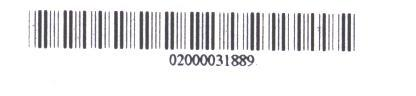

This is the username and password you use to login to campus computers, Carleton's wireless network, your Carleton email account, etc.
All current Carleton students, faculty and staff should have a MyCarletonOne account. Find out more about MyCarletonOne.
This is the number found under the barcode on your Library card. e.g.

If your barcode ends in an X, enter the X in upper-case.
This is the 4-digit PIN chosen when setting up your account at the Circulation Desk.
Get support via our Account Assistance form.